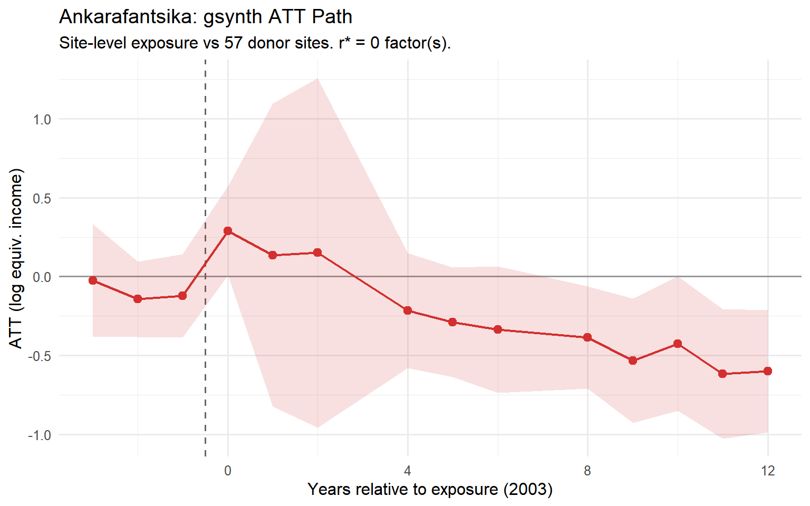
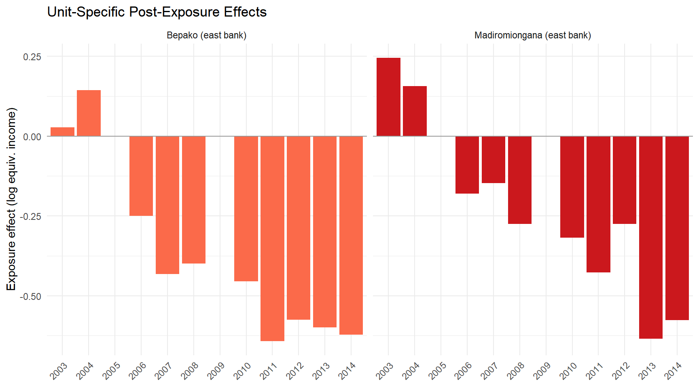
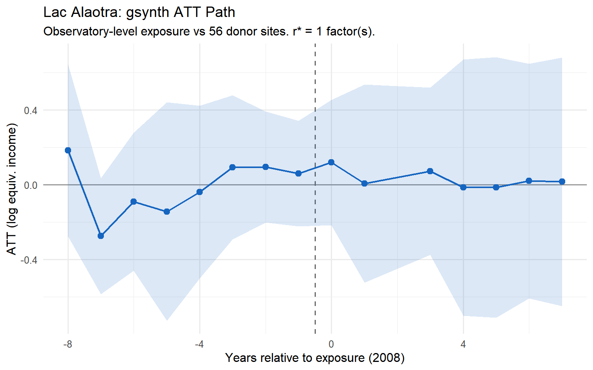
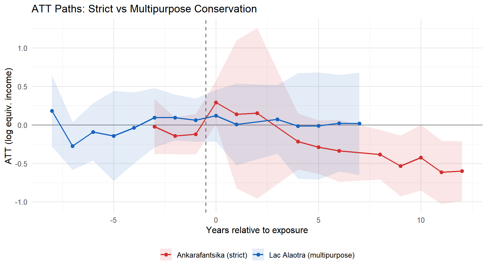
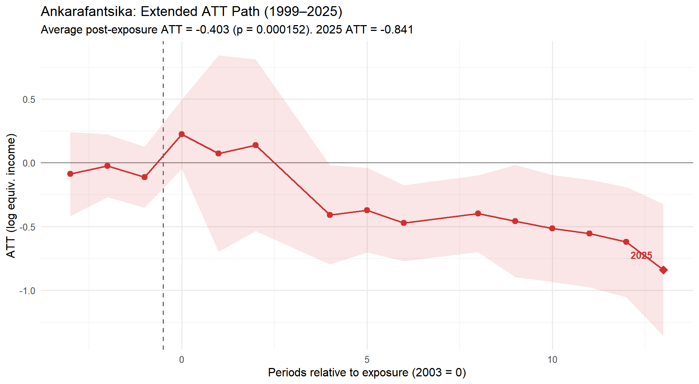
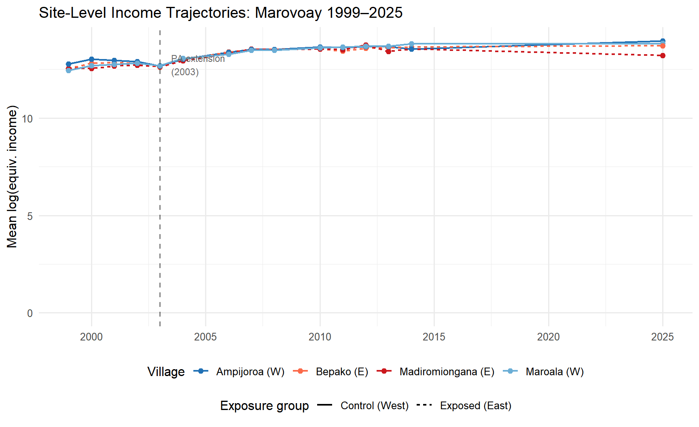

4 Results
Strict vs. multipurpose conservation impacts on household income
5 Ankarafantsika: strict conservation (IUCN II)
5.1 Panel construction
The Marovoay model comprises 2 exposed sites (Bepako and Madiromiongana, east bank) and donor sites from the 5 clean observatories identified in Appendix B (Antsirabe, Tsiroanomandidy, Ambovombe, Mahanoro, Itasy). The exposure period begins in 2003, providing 4 pre-exposure years (1999–2002) and up to 12 post-exposure years (2003–2014).
5.2 gsynth ATT path
The generalized synthetic control model finds a persistent negative gap between the east-bank Marovoay sites and their synthetic counterfactual. The average post-exposure average treatment effect (ATT) is approximately -0.312 log points (95% CI: [-0.550, -0.073], p = 0.010), corresponding to a roughly 27% difference relative to the projected counterfactual. The gap opens shortly after the 2002 park extension and does not close over the observation period.
How much of this gap is attributable to the park itself — rather than to the broader economic trajectory of the Marovoay region — is a question that the data alone cannot fully resolve. Marovoay was historically Madagascar’s most productive irrigated rice zone, often called the grenier à blé of the country. From the 1980s onward, the region experienced a well-documented decline driven by the silting of the Betsiboka River, the degradation of colonial-era irrigation infrastructure, and the collapse of state agricultural support. This regional trajectory predates the 2002 park extension and could plausibly account for part of the divergence that gsynth attributes to conservation exposure, if the donor observatories on the highland plateau or in the southern drylands were not similarly affected by the deterioration of irrigated lowland agriculture.
5.2.1 Within-Marovoay household RCS check
The household-level repeated cross-section design described in Section 6.4 applies the Callaway–Sant’Anna estimator to the 1999–2014 + 2025 Marovoay panel, contrasting east-bank (Bepako and Madiromiongana) against west-bank fokontany (Ampijoroa and Maroala).
| Marovoay: household RCS DiD | ||||
| Design | Estimate | SE (IF) | SE (cluster) | % income |
|---|---|---|---|---|
| East bank vs west bank | 0.000 | 0.050 | 0.046 | +0.0% |
The within-Marovoay point estimate is close to zero with a tight cluster-robust standard error — strikingly different in magnitude from the gsynth gap of -0.312 log points reported above. This contrast is a key diagnostic, and it cannot simply be dismissed as the two methods answering different questions.
The gsynth compares the east-bank villages against donor observatories located in the highland plateau or the southern drylands — places with different agronomic systems, different exposure to Betsiboka siltation, and different relationships with irrigated rice. If the Marovoay region as a whole has declined relative to those places for reasons unconnected to the park — the collapse of irrigation infrastructure, the retreat of the state from the rice economy, cycles of flooding and soil erosion — then gsynth will attribute that regional divergence to the PA, because the exposure timing coincides with the beginning of the observable panel. The within-Marovoay design controls for this regional shock: because east-bank and west-bank villages share the same river, the same downstream rice economy, and the same local market, a regional shock hits both sides simultaneously and cancels out of the east-west comparison.
The fact that east-bank and west-bank incomes tracked each other so closely throughout the study period is therefore a genuine warning. It suggests that the bulk of the divergence that gsynth identifies is a regional phenomenon — the decline of a once-prosperous agricultural region — rather than an effect that can be confidently attributed to the park boundary. A real park effect may still exist: east-bank communities face the park fence directly, while west-bank communities do not. But the within-observatory evidence places a much tighter bound on the plausible conservation-specific component than the gsynth estimate alone would suggest. The two results should be read together, with neither overruling the other.
5.3 Unit-specific effects

Both exposed fokontany show negative effects, though with different magnitudes. Bepako (4.1 km from the park boundary) shows a larger and more consistent effect than Madiromiongana (11.7 km), consistent with a distance gradient in enforcement intensity.
6 Lac Alaotra: multipurpose conservation (IUCN VI)
6.1 Panel construction
The Alaotra model has 1 exposed unit (the aggregated observatory) and donor sites from 5 clean observatories. The exposure period begins in 2008, providing 9 pre-exposure years (1999–2007) and 7 post-exposure years (2008–2014).
6.2 gsynth ATT path

The Alaotra gsynth estimates an average post-exposure ATT of approximately +0.014 log points (95% CI: [-0.303, +0.333], p = 0.928) — close to zero and not statistically significant. Year-by-year estimates are noisy with no clear trend away from the counterfactual.
The null result is consistent with several interpretations: participatory conservation under CBNRM may impose lower costs on aggregate income; the 7-year post-exposure window may be insufficient to detect a gradual effect; and the single-unit design limits statistical power.
6.2.1 Within-Alaotra household RCS check
The household-level repeated cross-section design described in Section 6.4 applies the Callaway–Sant’Anna estimator to the 1999–2014 + 2025 Alaotra panel under two within-observatory exposure proxies: distance to the nearest PA boundary (≤ 10 km) and the 2025 share of households declaring PA-dependent extractive uses (≥ 12.5%).
| Alaotra: household RCS DiD | ||||
| Design | Estimate | SE (IF) | SE (cluster) | % income |
|---|---|---|---|---|
| Distance ≤ 10 km | 0.015 | 0.075 | 0.113 | +1.5% |
| Extractive usage ≥ 12.5% | −0.042 | 0.074 | 0.152 | -4.1% |
Both within-Alaotra designs yield small point estimates and wide cluster-robust standard errors that comfortably include zero. Their conclusion agrees with gsynth along a different identifying contrast: not against an outside donor pool, but against the less exposed merged fokontany of the same observatory. The convergence narrows the range of plausible interpretations of the Alaotra null: the absence of an aggregate income effect of the Paysage Harmonieux Protégé is robust to whether the counterfactual is built from outside observatories (gsynth) or from within-observatory exposure heterogeneity (RCS DiD).
7 Comparison
| Comparative gsynth Results | ||||||||||
| Separate estimation for each PA (1999–2014) | ||||||||||
| PA | IUCN Category | Exposure year | Exposed unit(s) | ATT (log pts) | SE | 95% CI | ATT (pct) | p-value | r* (CV) | N donors |
|---|---|---|---|---|---|---|---|---|---|---|
| Ankarafantsika PN | II (strict) | 2003 | Madiromiongana & Bepako (east bank) | -0.312 | 0.122 | [-0.55, -0.073] | -26.8% | 0.010 | 0 | 57 |
| Lac Alaotra PHP | V (multipurpose) | 2008 | Aggregated observatory | 0.014 | 0.156 | [-0.293, 0.321] | 1.4% | 0.928 | 1 | 56 |

The contrast between the two estimated ATT paths is sharp on paper: a large persistent negative gap at Ankarafantsika, and a near-zero gap at Alaotra. Before drawing governance conclusions, however, some caution is warranted. At Marovoay, the within-observatory comparison between east and west bank finds no detectable difference, raising the possibility that the gsynth estimate is capturing regional economic decline rather than conservation effects. At Alaotra, the null result may reflect genuinely benign governance or insufficient statistical power. These two caveats temper but do not dissolve the contrast: the evidence is suggestive that strict exclusionary management carries higher livelihood costs than participatory co-management, but the data cannot definitively establish the causal mechanism.
8 Long-run assessment: 2025 resurvey
A 2025 resurvey of Marovoay (0 households across the four fokontany: Bepako and Madiromiongana on the east bank, Ampijoroa and Maroala on the west bank) extends the observation window to 22 years post-exposure.
8.1 Panel construction (extended model)
The extended model uses the full donor pool (all ROS sites with a complete 1999–2014 income series) rather than the clean 5-donor pool of Chapter 5. The exposed units are unchanged — Bepako (site 031) and Madiromiongana (site 032), east of the Betsiboka — but the 62 donor sites span 11 observatories:
- the 5 clean donors used in Chapter 5 (observatories 02, 13, 16, 25, 41);
- the 5 “also-exposed” observatories flagged in Appendix B (12, 15, 21, 23, 24);
- the 2 Marovoay west-bank fokontany (Ampijoroa 033 and Maroala 034), which are in the same observatory as the treated units and therefore share local shocks.
This is a weaker identification setting than the main specification: three of the donor observatories were themselves subject to PA expansions during the period, and two donor sites are one kilometre away from the exposed units. The results below should therefore be read as descriptive corroboration of the Section 5.2 estimates rather than an independent test.
The 2025 resurvey only covered Marovoay (and Alaotra, which is not part of this panel). Accordingly, in the extended panel, 2025 income data exist for exactly 4 sites — the 4 Marovoay fokontany (031, 032, 033, 034) — and are NA for all other donors. The 2025 counterfactual is therefore extrapolated from pre-2015 donor dynamics under the gsynth factor model.
8.2 Extended gsynth

Including 2025 in the panel, the average post-exposure ATT deepens substantially: -0.403 log points in the extended model vs -0.312 in the 1999–2014 main specification. The 2025-specific ATT (-0.841 log points) is about 2.7× the 1999–2014 average, indicating that income losses compound rather than dissipate over time. The widening gap is visible in raw site-level trajectories:

8.3 Robustness of the 2025 gap
The east-west income gap in 2025 is not driven by outliers: it is visible at every percentile of the income distribution, IQR-based outlier removal widens rather than narrows the gap, and the west-bank advantage appears across five of seven major income components. In statistical terms, the gap is large enough to pass standard tests (Wilcoxon rank-sum \(p = 2.1 \times 10^{-10}\); Welch \(t\)-test \(p = 1.8 \times 10^{-5}\)).
What remains unresolved is whether this gap reflects cumulative park exposure or the long-term effects of the same regional decline discussed in Section 5.2.1. By 2025, the Marovoay irrigation system has deteriorated further, rural-to-urban migration has reshaped communities, and the region’s rice economy has never recovered its former position. The 2025 gap is real and robust; its attribution to conservation policy specifically requires caution.
8.4 Alaotra long-run assessment
For Alaotra, a 2025 gsynth extension is not feasible: all Alaotra sites are exposed and no other observatory was resurveyed, so there are no 2025 control observations. The Alaotra estimate remains based on the 1999–2014 panel (ATT ≈ +0.014, \(p\) = 0.928).